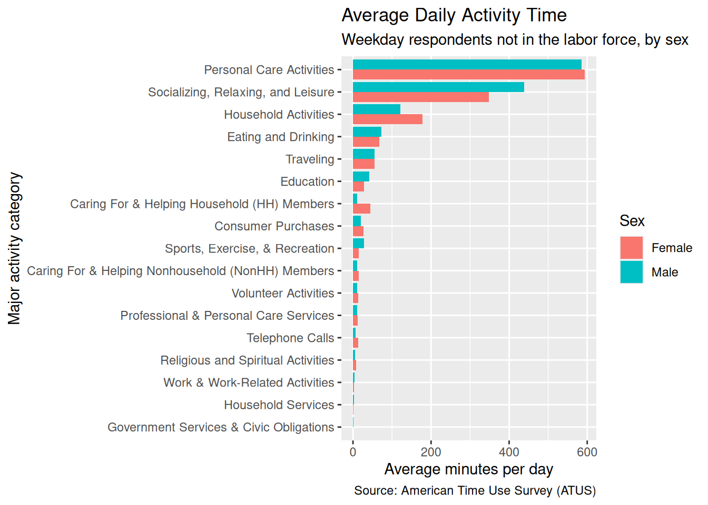

library(dplyr)
library(dbplyr)
library(DBI)
library(duckdb)
library(ggplot2)library(ggplot2) library(dplyr)
ggplot(hourly_avg, aes(x = hour, y = avg_minutes, fill = category)) + geom_area(position = “stack”) + facet_wrap(~ sex) + scale_x_continuous( breaks = 0:23, labels = function(x) { sprintf(“%02d:00”, x) } ) + labs( title = “How the Day Fills Up”, subtitle = “Average daily minutes spent in each activity by hour and sex”, x = “Hour of the Day”, y = “Average Minutes”, fill = “Activity Category”, caption = “Source: hourly_avg dataset” ) + theme_minimal()— title: “Analyzing Americans’ Time Use” author: “Chloe Mercurio” execute: echo: false —
A database table lives on disk and can be arbitrarily large, while a data frame lives in memory. The ATUS activity table you are about to use has 4.9 million rows, which is why it ships as a DuckDB file rather than as a CSV you would read into R.
dbplyr is the translator: you write an ordinary dplyr pipeline against a database table, it turns the pipeline into SQL, and the database — here DuckDB, running inside your R session through the duckdb driver and the DBI interface — does the work. R receives only the rows you ask for with collect().
The activities table records each diary entry’s start time and duration. respondents has one row per person, including sex, age, and employment status, while activity_codes maps numeric codes to category names. The six-digit activity_code encodes a three-level hierarchy: 120303 means Socializing, Relaxing, and Leisure (12) > TV and Movies (03) > Watching TV (03). Likewise, start_hhmm encodes time in HHMM format, so 1430 means 2:30 PM.
con <- dbConnect(duckdb(), dbdir = "data/atus.duckdb", read_only = TRUE)duckdb keeps downloaded extensions and secrets in a temporary directory:
ℹ /tmp/RtmpH32n2f/duckdb
This is removed when the R session ends.
• Extensions are re-downloaded each session.
• Secrets are lost.
ℹ Run duckdb(shared_home = TRUE) (or create ~/.duckdb) to keep them (suitable for most users).
ℹ Run duckdb(shared_home = FALSE) to accept the temporary directory (and silence this message).
ℹ See ?duckdb_storage for details and alternatives.dbplyr_act <- tbl(con, "activities")
dbplyr_resp <- tbl(con, "respondents")
dbplyr_codes <- tbl(con, "activity_codes")activity_avg <- dbplyr_resp |>
filter(day_type == "Weekday", employment_status == "Not in labor force") |>
select(tucaseid, sex) |>
cross_join(
dbplyr_codes |>
filter(major_code != 50) |>
distinct(major_code, major_name)
) |>
left_join(
dbplyr_act |>
inner_join(
dbplyr_resp |>
filter(day_type == "Weekday", employment_status == "Not in labor force") |>
select(tucaseid, sex),
by = "tucaseid"
) |>
inner_join(dbplyr_codes, by = "activity_code") |>
filter(major_code != 50) |>
group_by(tucaseid, sex, major_name) |>
summarize(minutes = sum(duration_min, na.rm = TRUE)) |>
ungroup(),
by = c("tucaseid", "sex", "major_name")
) |>
mutate(minutes = coalesce(minutes, 0)) |>
group_by(sex, major_name) |>
summarize(avg_minutes = mean(minutes, na.rm = TRUE)) |>
arrange(sex, desc(avg_minutes)) |>
collect()! Grouped output by "tucaseid" and "sex".
ℹ Override behaviour and silence this message with the `.groups` argument.
ℹ Or use `.by` instead of `group_by()`.
! Grouped output by "sex".
ℹ Override behaviour and silence this message with the `.groups` argument.
ℹ Or use `.by` instead of `group_by()`.That render took as long as the last one, because the aggregation over 4.9 million rows still had to run once to fill analysis_cache/. From now on every render reads the 36-row activity_avg back from disk and never touches the database. The cache is keyed on the chunk’s code, not on the database file. If you ever drop a newer atus.duckdb into data/, delete analysis_cache/ before trusting the numbers.
weekday_respondents <- dbplyr_resp |>
filter(day_type == "Weekday", employment_status == "Not in labor force") |>
select(tucaseid, sex)
weekday_sex_counts <- weekday_respondents |>
count(sex, name = "n_respondents") |>
collect()
major_categories <- dbplyr_codes |>
filter(major_code %in% c(1, 2, 3, 12)) |>
distinct(major_code, major_name) |>
collect()
hourly_minutes <- dbplyr_act |>
inner_join(weekday_respondents, by = "tucaseid") |>
inner_join(
dbplyr_codes |>
filter(major_code %in% c(1, 2, 3, 12)) |>
select(activity_code, major_code, major_name),
by = "activity_code"
) |>
mutate(hour = floor(start_hhmm / 100)) |>
filter(hour >= 6, hour <= 23) |>
group_by(sex, major_code, major_name, hour) |>
summarize(total_minutes = sum(duration_min, na.rm = TRUE)) |>
collect()! Grouped output by "sex", "major_code", and "major_name".
ℹ Override behaviour and silence this message with the `.groups` argument.
ℹ Or use `.by` instead of `group_by()`.hourly_avg <- tidyr::crossing(
weekday_sex_counts,
major_categories,
hour = 6:23
) |>
left_join(
hourly_minutes,
by = c("sex", "major_code", "major_name", "hour")
) |>
mutate(avg_minutes = coalesce(total_minutes, 0) / n_respondents) |>
select(sex, major_code, major_name, hour, avg_minutes) |>
arrange(sex, major_code, hour)
print(hourly_avg)# A tibble: 144 × 5
sex major_code major_name hour avg_minutes
<chr> <int> <chr> <dbl> <dbl>
1 Female 1 Personal Care Activities 6 6.58
2 Female 1 Personal Care Activities 7 8.33
3 Female 1 Personal Care Activities 8 7.09
4 Female 1 Personal Care Activities 9 5.72
5 Female 1 Personal Care Activities 10 4.68
6 Female 1 Personal Care Activities 11 3.95
7 Female 1 Personal Care Activities 12 4.97
8 Female 1 Personal Care Activities 13 5.00
9 Female 1 Personal Care Activities 14 4.71
10 Female 1 Personal Care Activities 15 4.08
# ℹ 134 more rowsactivity_avg |>
filter(major_name != "Data Codes") |>
ggplot(aes(x = reorder(major_name, avg_minutes), y = avg_minutes, fill = sex)) +
geom_col(position = "dodge") +
coord_flip() +
labs(
title = "Average Daily Activity Time",
subtitle = "Weekday respondents not in the labor force, by sex",
x = "Major activity category",
y = "Average minutes per day",
fill = "Sex",
caption = "Source: American Time Use Survey (ATUS)"
)